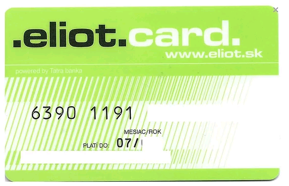

Internetová banka je banka, ktorá poskytuje služby retailového bankovníctva bez vlastnej siete pobočiek. Podlieha však rovnakým formám bankového dozoru centrálnej banky ako ostatné pobočkové banky. Takáto banka sa niekedy nazýva aj virtuálna banka a forma bankovníctva sa označuje ako internetové bankovníctvo, elektronické bankovníctvo, direct banking alebo priame bankovníctvo.
Z organizačného hľadiska možno internetovú banku charakterizovať ako finančný ústav, ktorý všetky svoje systémové aktivity na odbyt bankových služieb realizuje prostredníctvom priamych komunikačných kanálov. Bežnou formou priameho bankovníctva bol v minulosti poštový styk, v novších časoch je to najmä internet. Vďaka technickému pokroku majú aj mnohé nebankové inštitúcie špecializované oblasti predaja, ktoré pracujú ako internetová banka.
Odkazy wiki:
Prvá internetová banka na Slovensku pod názvom Eliot vznikla 5.6.2000 ako dcérska spoločnosť Tatra banky, a.s. Banka ukončila svoju činnosť 1. 9. 2005.
K 15. 5. 2011 pôsobili na Slovensku tri internetové banky a dve banky ponúkali vkladový produkt (ING Konto a Sporiaci účet AXA Banky), ktorého spravovanie má znaky vedenia účtu v internetovej banke.
 Na obrázku môžete vidieť eliot kartu prvej slovenskej internetovej banky eliot.
Rôzne internetové banky na Slovensku
mBank (dcérska spoločnosť poľskej BRE Bank SA) (člen nemeckej skupiny Commerzbank Group)
ING Konto (produkt holandskej ING Bank N.V.)
Fio banka (dcérska spoločnosť českej Fio banka, a.s.)
ZUNO AG (dcérska spoločnosť rakúskej Zuno Bank AG) (člen skupiny Raiffeisen Bank International - Tatra banka). Banka k 3. 6. 2017 ukončila poskytovanie bankových činností
AXA Bank (dcérska spoločnosť francúzskej poisťovacej skupiny AXA).
V januári 1997 spustila banka Sumitomo Bank prvú službu online bankovníctva. Do roku 2010 väčšina veľkých bánk implementovala služby online bankovníctva, avšak typy ponúkaných služieb sa líšili. Podľa prieskumu, ktorý v roku 2012 uskutočnila Japonská asociácia bankárov (JBA), bolo 65,2% používateľmi osobného internetového bankovníctva.
Internet banking...
Viete, čo sa deje s Vašimi dátami online? Niektorí sa Internet bankingu vyhýbajú preto, že sa jednoducho o svoje peniaze boja. Niet sa čo diviť. Denne na nás na internete číha až 150-tisíc vírusov a rôznych iných hrozieb. Aj proti nim sa však dá chrániť. Prvým krokom je vedieť, aké hrozby sú najčastejšie. Zamerajme sa teda na tie, ktoré môžu ohroziť priamo vaše peniaze.